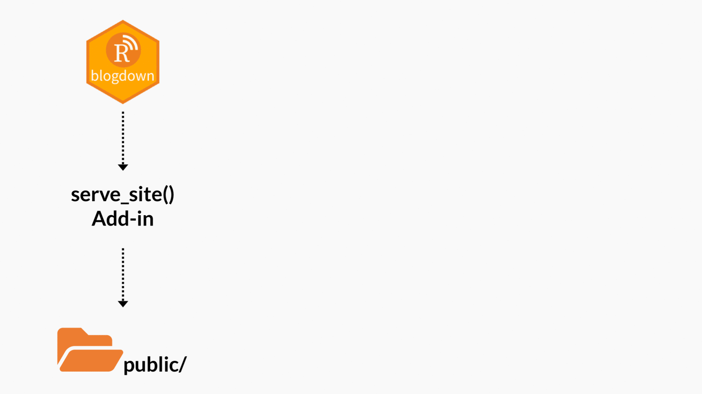
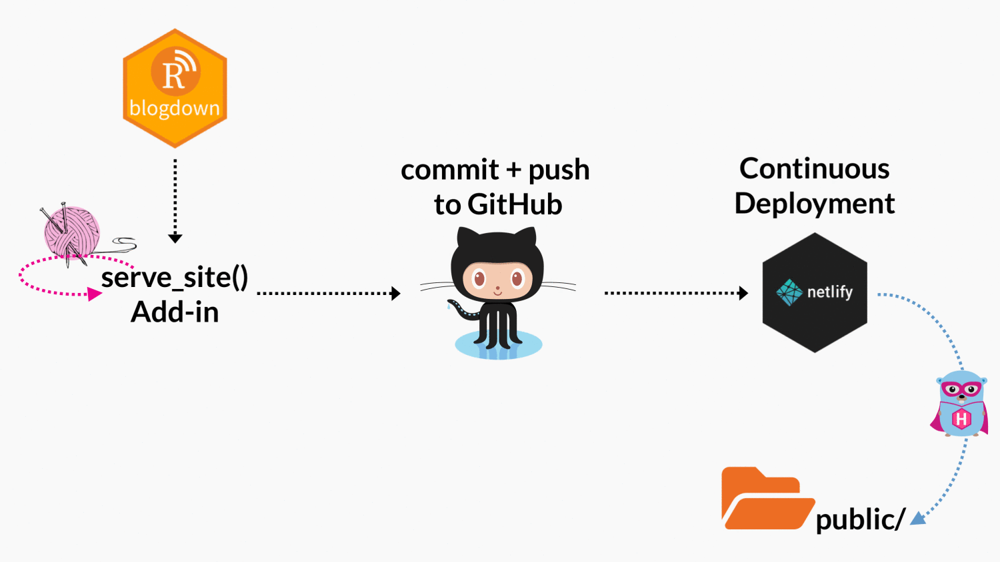

A Spoonful of Hugo: Troubleshooting Your Build

“Just a spoonful of Hugo helps the blog go down.”
- me, only somewhat kidding
In this series, I’m sharing small spoonfuls of Hugo that I have learned that hopefully can help you get your site UP (and even better- more efficient, more streamlined, more automated). You can read the previous posts about my “Spoonful of Hugo” series about Hugo archetypes, Hugo versions, and Hugo page bundles.
The following are a few steps that I always start with to troubleshoot any blogdown/Hugo/Netlify problems. These steps would solve what I would anecdotally estimate as ~50% of blogdown problems that I see posted in the GitHub repository and on the community site.
#1: Update Hugo

Figure 1: Don't be like this
If things have gone south and you are getting Hugo errors when you use the “Serve Site” Addin locally, it is possible that you need to update your version of Hugo. From R, you can check your Hugo version with blogdown:
blogdown::hugo_version()
Then you can reference your Hugo theme to find the minimum version of Hugo required by your theme:
Figure 2: Check your theme's minimum Hugo version
You can go higher than the minimum version though, so it’s good practice to update your Hugo, again from within R:
blogdown:: update_hugo()
Check your version again post-update:
blogdown::hugo_version()
## [1] '0.79.0'
If you are using Netlify to build your site using Hugo, you’ll want this version to match that- the best way to do that is with a netlify.toml file.
#2: Change the baseurl

Open up your config.toml file and look for the baseurl field, usually pretty close to the top. Here is mine^[Yes that’s right, I don’t have a trailing slash- read on for why I can get away with this.]:
baseurl = "https://alison.rbind.io"
Now if you are just starting with Hugo and don’t actually have a domain name yet, try taking the advice that blogdown automatically prints out for you:
Warning: You should change the "baseurl" option in config.toml
from https://example.org to your actual domain;
if you do not have a domain, set "baseurl" to "/"
But be careful here- you shouldn’t leave it as “/"- once you do have your domain name you should update the baseurl as “/” is a not a valid URL.
Care to know more?
Here is a quote from the person who writes the Hugo docs:
“…the only purpose for the baseurl field in the config is to define the full base URL of your website for deployment purposes.” - @ rdwatters
The main error that would happen without the trailing slash in the past is that you would end up with a site where the theme’s CSS would be all wrong. This was probably because the theme designer used code like this buried in a layout file:
<link rel="stylesheet" href="{{ .Site.BaseURL }}css/style.css"/>
Now, if you set baseurl = "http://mysite.com" but only rendered locally, things would look just peachy, because the default local server already included the trailing slash. So, the link in the html file would be^[https://discourse.gohugo.io/t/how-not-to-specify-url-site/5691/5]:
<link rel="stylesheet" href="http://localhost:1313/css/style.css">
But, at build, the link in the html file would turn into:
<link rel="stylesheet" href="http://mysite.comcss/style.css">
Which creates sites that look like this:

Figure 3: Hugo tranquil peak theme

Figure 4: Hugo universal theme

However, Hugo authors and theme developers have largely been moving towards using relative URLs instead of the baseurl to build paths. This was based on public advice voiced by the Hugo authors on the discourse forum. For example:
“The recommended way to reference resources is to use either relURL or absURL template funcs, which handles the slash issues."- @ bep
Following that advice, a more up-to-date theme would have code that looks like this buried in a layout file:
<link rel="stylesheet" href="{{ "css/style.css" | relURL }}"/> →
Bottom line? If your theme uses relURL or absURL to link to site resources like CSS, JavaScript, or static images, then whether or not you include a trailing slash in your baseurl should not matter at all.
And here is some tough love about your theme: if the most recent version does still require the trailing slash in the baseurl to “work” out of the box, I would seriously consider switching themes. This is a pretty good “canary in the coal mine” test regarding how up-to-date the theme author is, and how well the theme you have chosen adheres to Hugo templating best practices. If you are having pain with this now, it is likely not the only thing that will be painful about working with your theme.
#3: Netlify drag-and-drop

If you can render your site locally but your published site looks different, try the drag-and-drop method:

Use the “Serve Site” Addin, then drag-and-drop the public/ folder straight into Netlify. What does this do? You can now see your public site…that you built…with your local version of Hugo. Netlify is doing none of the site building here.

One of the first benefits of this approach is that it ensures that you are able to actually generate a public/ folder locally! I have seen folks struggle to deploy the wrong repo. This simple step can force you to make sure to use the “Serve Site” Addin to generate the public/ folder, and that the repo you are trying to link to Netlify actually contains a Hugo site because you must physically move the public/ folder. But this method can also help you diagnose other problems too.
If your public/ folder does not render on Netlify, you have work to do locally. I can’t tell you what it is as it can be a number of things, but you can be sure that your problem is not just the Netlify build- it is your local build too.
If your public/ folder does render perfectly on Netlify, but you are getting a Netlify build error, then you likely have a Hugo version problem. It might be that the version you are running locally is more recent than the version run by Netlify by default to actually build your site. The good news is there is a quick fix for this! The solution is to upgrade the Hugo version Netlify is using- see my advice
here for how to do that.
If you are happy with how your site looks but you are missing content and/or seeing old deleted content, then you may need the next few strategies to troubleshoot.
#4: Torch public/

When you are seeing very weird things locally, try deleting your local public/ folder. Then serve site again. Sometimes it can get “junked up”. I’ve found that sometimes deleted content can be a
little sticky. As recommended in the
blogdown book:
“you are strongly recommended to delete the
/public/directory before you rebuild the site for publishing every time, because Hugo never deletes it”
Also, this has a bonus of reinforcing for you exactly what the “Serve Site” Addin does - it regenerates the public/ folder. This is also the folder that, if you are using
Netlify to build your site, is in your .gitignore file because Netlify (+ Hugo) generates this file “fresh” with each push to your GitHub repository.

#5: Peruse public/

When you notice weird things, try actually looking inside public/- don’t be afraid to spelunk around in there! If you are seeing something wrong with your site, try to figure out how blogdown/Hugo is processing and rendering your content. This folder can tell you a lot! Keep in mind that your local public/ folder will still contain
future/draft/expired content if you used the “Serve Site” Addin.
#6: Back to the future

Figure 5: Where are my posts?
If your site renders beautifully locally, and your drag-and-drop site from public/ looks the same, but you are missing key content when you actually deploy to Netlify using a Hugo build, you may have inadvertently stumbled into a Hugo date time warp. This is a fairly
common gotcha. Try using the drag-and-drop method again, this time first delete public/, then instead of using the “Serve Site” Addin, run this in your console:
blogdown::build_site(local = FALSE)
Plop this new public folder in Netlify to see what your site will look like when it is actually published. What does this show you? Your local Hugo build (read: your public/ folder generated by “Serve Site”) differs by design in 3 important ways from your deployed site built by Netlify/Hugo. By default,
Hugo will not publish:
-
Content with a future
publishDatevalue -
Content with
draft: truestatus -
Content with a past
expiryDatevalue
You can see that these are defaults. The behavior of the “Serve Site” Addin is also documented in the blogdown book:
“This is for you to preview draft and future posts locally.”
Blogdown’s build_site(local = FALSE) differs from the “Serve Site” Addin in that it will not render draft, future, or expired content. So your public/ folder from build_site(local = FALSE) shows you exactly what Netlify should publish. Seeing it can help you troubleshoot why some content was showing up locally but not when you publish.
The defaults are pretty sensible and nice to have, as you can still put these kinds of content under version control, and hence collaborate with other team members on the content without having the content publish (or expire) until you say so.
To show content that Hugo was hiding, you’ll want to edit some YAML fields in the individual offending content files. For example, in the YAML of an individual content file (like a blog post), if you want to un-draft it, add or change this key/value:
title: 'A Spoonful of Hugo: Troubleshooting your Build'
author: "Alison Hill"
date: '2019-03-04'
draft: false
Alternatively, if you want to date something in the future (like to advertise the date of an upcoming talk) but publish now, you can use the publishDate field. The publishDate field is a newer addition to Hugo (>= v0.54.0) which, if left unset, will default to the date field, which means in the individual content file YAML you can do:
title: 'A Spoonful of Hugo: Get excited!!'
author: "Alison Hill"
date: '2025-03-04'
publishDate: '2019-03-04'
Hopefully these 6 things can help you get unstuck. If not, the RStudio community forums are a great place to ask questions!